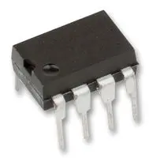

Revisiting The Project Bootstrapping
tags: [hardware microcontroller rambling]

Did you know that AVR is one microcontroller family that can be programmed by bit banging by hand? No computers or USB interfacing required, just plain physical, electrical on-and-offs.
It’s true. The in-system programming (ISP) interface of AVR is concise enough that you can write to its flash memory an upwards of 10 to 20 instructions one bit at a time, with a reasonable amount of patience. In comparison, the JTAG type interface used by ARM and MIPS chips is too fiddly to program by hand, I discovered. Another big factor is that AVR is an 8-bit architecture so the instructions are only 16-bit wide.
 ATtiny85 8-bit microcontroller
Why would that be useful? It is a mythical tale I tell time to time of when I bootstrapped a rudimentary DOS-like operating system 5 years ago over 9 months, starting with a handful of ATtiny85s.
‘Bootstrapped’ meaning I did not use existing software stack to program it.
‘Mythical’ because I did not leave any tangible records of it. The anectodes on this post are all there is of it.
The Project Bootstrapping
It was an exercise that I believed could be described as retracing the history of the development of modern software stack, from assembler to operating systems. When one starts programming, the existence of a suite of software toolchain and programming environment is taken for granted. But, how was that toolchain made?, it was to be explored.
But I am not sure if that is a valid description of project. First, I was already equipped with some CS knowledge of software stack, so I already knew the end result. No creativity was required like it would have been for the early pioneers of computers. And secondly, I was programming 8-bit microcontrollers which are not general computers.
Nonetheless it was an educational exercise.
It’s All About Stages
Bootstrapping happens in discrete steps with the increasing abilities of making longer programs.
Stage 1: one bit in, one bit out
- Input: a button
- Display: an array of 8 LEDs displaying the byte I am pushing in
For the first stage described above, only about ~16 instructions could be added to a program before I run out of patience and sanity. Hand-scribing instructions into binary is tedious enough, what is more punishing is I only have to make one 1-bit mistake and the program is broken. And there isn’t a way to debug it.
A 16-instruction program cannot do much. What it can do is, you can put together a few of these chips on a breadboard and make a system that lets you program slightly longer programs. Now you can program 30 instructions before going crazy.
Stage 2: bytes and 7-segments
- Input: a row of 8 buttons + one ’enter’ button, I call it a ‘piano keyboard’.
- Display: four 7-segment displays displaying four hex digits
I should mention that I took the liberty of supplying myself with any discrete logic ICs I wanted, the most useful of which was the shift registers such as 74HC597. They were the ones driving the system in the early stage when μCs (microcontrollers) programming was limited.
With the shifting and latching mechanism provided by the shfit registers, now I can push 8 bits at a time, increasing typing speed. And with the 7-segment hex display, I can see which instructions are being entered, greatly reducing the number of mistakes. Now, something more substantial can be made.
Stage 3: characters
- Input: same
- Display: 16x2 Character LCD
- Storage: Serial EEPROM
This was a stage when the system started to look more visibly like a computer. Thanks to the more logic in the μCs, the content of the memory could be displayed on the LCD display and be browsed and edited in hex form.
Two programs are added:
- Hex Editor - browse and edit the program instructions stored in an EEPROM IC.
- Programmer - flash the stored program in the EEPROM onto the μC’s memory.
Thanks to these two programs, the length of a program was no longer limited by the amount of patience I have in one programming session. Separate routines could be edited at different times and combined into programs of arbitrary length.
With this explosion of the capability of the system, it was time to go symbolic.
Stage 4: going symbolic
- Input: same
- Display: same
- Storage: same. I was using EEPROM packages like the floppy disks in early PCs.
Up till this point, I was assemblying the binary with the help of my programmable scientific calculator and transcribing the result by hand.
I added two more programs.
- Text Editor - my version of
ed - AVR Assembler - assembling my (rudimentary) version of the AVR assembly language
Now, no more transcribing binary by hand was needed. The system was self-sufficient.
I started putting together a picture of what my own toolchain should look like by the end of this project. My toolchain was half complete at this point. (I don’t finish it, tho.)
[text editor] - [compiler] - [assembler] - [linker] - [programmer]
- [system runtime]
I came to one realization: 8-bit programming is limited. 256 is a small value for a variable. I found myself keep reaching for the 16-bit operations while programming, and programming 16-bit operations with 8-bit instruction set is unwieldy. The system grew out of 8-bit.
Stage 5: going 32-bit
To be continued…